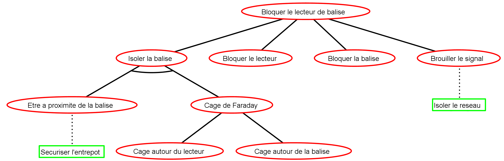

Glasir
Modélisez et analysez la sécurité de vos systèmes.
Simplement.
Rapidement.
Qu'est-ce que Glasir ?
Glasir est un logiciel open-source dédié à l'analyse de sécurité de n'importe quel système. Avec Glasir, vous pourrez identifier les points faibles de vos systèmes grâce à une représentation formelle appelée "arbre d'attaque et de défense" ("attack-defense tree", ou "ADTree", en anglais).
Glasir est le résultat d'un projet réalisé par un groupe d'étudiants de 4e année du département Informatique de l'INSA de Rennes. L'objectif initial était d'identifier les faiblesses du réseau de transports en communs de Rennes. Afin d'accomplir cette tâche, la création d'un outil d'analyse basé sur le formalisme des ADTrees fut décidé.
Cet outil fut baptisé Glasir, en référence &agrava; la mythologie nordique où Glasir est un arbre aux feuilles d'or situé aux portes du Valhalla, dans le royaume d'Asgard.


Que sont les "ADTrees" ?
"ADTree" est le diminutif de "Attack-Defense Tree", une représentation graphique des attaques et/ou défenses possibles concernant un système donné. Il s'agit d'une représentation un peu particulière, partant de l'attaquant plutôt que du système à défendre, afin d'être mieux adapté aux différents attaquants possibles.
L'existant : ADTool
ADtool est un logiciel open-source développé par une équipe de chercheurs, dans le but d'informatiser les ADTrees. En plus de leur représentation graphique, il est possible de valuer les ADTrees selon différents paramètres appelés "domains". Glasir utilise ADTool pour afficher les ADTrees manipulés.

Comment analyser les ADTrees ?
Glasir offre plusieurs outils permettant d'analyser les systèmes. Dans ce but, trois modules sont disponibles :
- l'Éditeur de Fonctions, qui permet de combiner les paramètres existants pour en créer de nouveaux ;
- le Filtre, pour mettre en évidence les attaques accessibles à un attaquant en particulier ;
- l'Optimiseur, pour déterminer l'attaque la plus efficace contre votre système selon un paramètre donné.